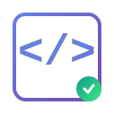

اختبار الأيقونة المتحركة

هذه الأيقونة تحتوي على:
رمز
في المنتصف
دائرة متحركة في الزاوية اليمنى السفلية
تأثيرات زجاجية وتوهج نيون
ملاحظة:
الدائرة المتحركة في حاوية مستقلة تمامًا عن الأيقونة وتظهر في المقدمة.